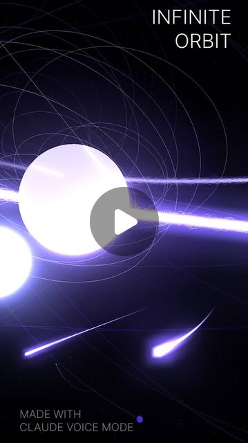
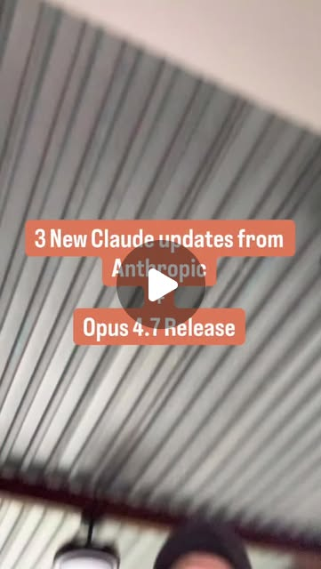
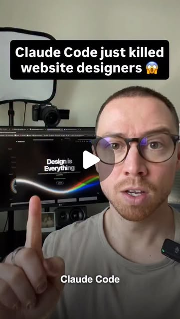
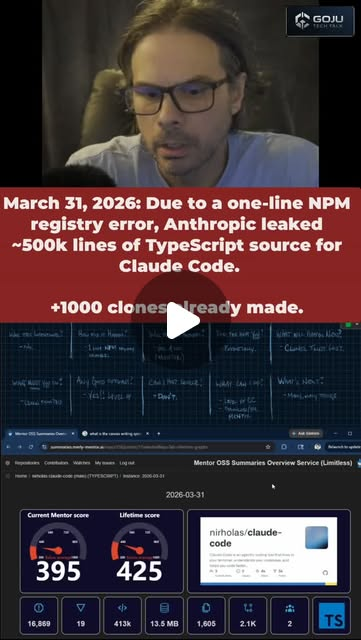
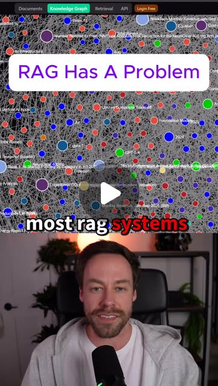
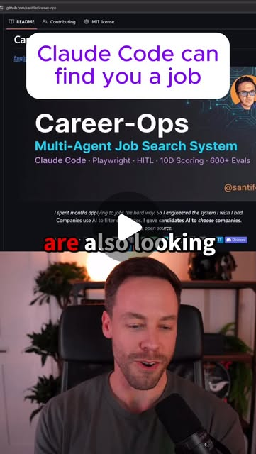

Claude Mastery: From First Install to Advanced Agent Architecture
Try It — Action Sketch
1. Install Claude Code: npm install -g @anthropic-ai/claude-code 2. Create CLAUDE.md in your project root with behavioral rules 3. Install 2-3 starter skills (brainstorming, systematic-debugging) 4. Set up auto-memory (file-based or MCP-backed) 5. Add hooks for session-start context loading 6. Learn thinking keywords (think → ultrathink progression) 7. Try parallel worktrees for multi-branch development 8. Build custom skills for your recurring workflows
Connected Posts (50)

















Prompt system — run this yourself
Pasteable into Claude Code, Claude, or any agent. One-shot for the whole result, step prompts when you want to steer. Every step carries its own audit; the gap audit makes the agent find and fill what it missed.
Mission. Turn a bare Claude Code install into a mastered, measured setup for one real project: CLAUDE.md, skills, hooks, MCP/CLI tools, memory persistence, parallel worktrees, and cost controls - each adopted only after it beats the prior setup on a repeatable test. Done means a documented progression (bare -> configured) with before/after numbers on real tasks, a stale-rule audit applied, and a reproducible setup a second project can inherit.
1 · Deeper, not bigger
- What a top professional would do (that you didn't ask for): Someone who actually masters Claude Code treats the setup as an engineering system, as Boris Cherny's team does (keshavsuki, evolving.ai, mindwired.ai): plan-first, 3-15 parallel worktrees, every correction becomes a rule in tasks/lessons.md, never mark done without proving it. But mastery now also means SUBTRACTION: Cherny's own simple mode (foundedceo) shows ablating prompts can make the model smarter, and cooper.simson's purge shows stale CLAUDE.md rules written for older models drag new ones down. A master also controls cost (chase.h.ai's caveman/concise-output study, advisor mode = Opus plans while Sonnet/Haiku execute), prefers CLI over MCP where it is leaner, and uses retrieval (Graphify, LightRAG) to query before reading raw files. They measure each addition, not cargo-cult it.
- Rawest material to start from: Anthropic's Claude Code docs (CLAUDE.md, skills, hooks, MCP, subagents, routines, worktrees); Boris Cherny's published CLAUDE.md and team workflow; your own project and its session transcripts; the caveman repo and the concise-output study chase.h.ai cites; the advisor-mode and simple-mode features; Graphify / LightRAG / RAG-Anything for retrieval; the awesome-design-md repo for UI work; the AMD-director session-log analysis (aiemerges/nataindata) as a caution about measuring real behaviour, not vibes.
- Methods and tools: Claude Code with a real git repo; CLAUDE.md + tasks/lessons.md + primer.md; skills/ and .claude/hooks/ (SessionStart, PreToolUse, Stop); MCP servers vs CLI tools (prefer the leaner per task); git worktrees for parallel sessions; thinking-keyword discipline (think -> ultrathink); caveman/concise output for token control; advisor/simple mode; Graphify for query-before-read; a small benchmark of 3-5 real tasks timed and token-counted bare vs configured; a stale-rule ablation audit.
- What proves it right: A before/after benchmark on 3-5 real project tasks: configured setup beats bare on tokens, wall-clock, or a correctness check, measured not vibed (explicitly the opposite of eyeballing, per the aiemerges session-log study). An ablation showing stale/over-instruction rules, once removed, do not hurt (or help) the score. A second project inheriting the setup reproduces the behaviour. Parallel-worktree throughput measured on a real multi-task batch.
Rewritten prompt — ask for exactly that:
Act as a Claude Code power user who measures, not a tutorial reader. For my project at <path>, take me from bare install to a mastered, proven setup and quantify every step. Baseline first: pick 3-5 tasks I actually do, run them on a bare config, and record tokens and wall-clock. Then add components one at a time, re-running the benchmark after each: a CLAUDE.md distilled from my transcripts (Boris Cherny pattern - plan-first, subagents, corrections become rules in tasks/lessons.md, prove before done); primer.md + memory persistence; 2-3 skills for workflows I repeat; hooks for self-correction; MCP vs CLI tools (keep the leaner); Graphify for query-before-read; parallel worktrees for a real multi-task batch; and cost controls (caveman/concise output, advisor mode). Crucially, run a subtraction pass: ablate each rule and skill, and delete anything whose removal does not hurt the benchmark - stale rules written for older models make new ones dumber (cooper.simson, Cherny's simple mode). Keep only what beats the prior setup. Return the progression with before/after numbers, the ablation results, the cost delta, and a setup a second project can inherit.
2 · One-shot prompt
You are a Claude Code power user who measures everything. Your job is to take one real project from bare install to a mastered, proven setup, keeping only what beats the prior configuration on a repeatable test. Stance: measure, do not cargo-cult; subtract as aggressively as you add. No marketing language. Context and method: Boris Cherny's team workflow is the reference - plan-first, 3-15 parallel worktrees, every correction becomes a rule in tasks/lessons.md, never mark done without proof. But mastery is also subtraction: Cherny's simple mode (CLAUDE_CODE_SIMPLE-style ablation) shows stripping prompts can raise capability, and cooper.simson's purge shows stale rules written for older models drag new models down. Control cost: the concise-output/caveman study chase.h.ai cites shows brevity can raise accuracy and cut tokens; advisor mode lets Opus plan while Sonnet/Haiku execute. Use Graphify/LightRAG to query before reading raw files. And heed the AMD-director session-log analysis (aiemerges/nataindata): measure real behaviour from logs, not vibes. Hard constraints: benchmark on 3-5 real tasks from THIS project; add components one at a time and re-run; ablate every rule/skill and cut what does not earn its place; measure tokens and wall-clock, never eyeball. Name real features, files, tools. Do not adopt a component without a before/after number. Ordered deliverables: (1) a baseline benchmark - 3-5 real tasks on a bare config, tokens + wall-clock. (2) a CLAUDE.md distilled from my transcripts (Cherny pattern) + its benchmark delta. (3) memory: primer.md + tasks/lessons.md + a launch git-state injector, + delta. (4) 2-3 skills for repeated workflows + delta. (5) hooks for self-correction + delta. (6) tool layer: MCP vs CLI chosen per leanness, and Graphify for query-before-read, + delta. (7) parallel worktrees measured on a real multi-task batch. (8) a subtraction pass: ablate each rule/skill, delete what removal does not hurt; plus cost controls (concise output, advisor mode) with the token delta. Built-in gap analysis: before finishing, list what is unverified - are the benchmark numbers from real runs; did any component get adopted without beating baseline; are stale rules still present; is the worktree throughput measured or assumed. Fill what you can. Self-questions to answer in writing: Are my numbers measured from real runs, or vibed (the exact mistake the session-log study warns about)? Did any rule get kept despite the ablation saying cut? Are there rules written for older models still dragging the new one? Did concise/caveman output actually cut tokens without hurting correctness? Did advisor mode lower cost on the benchmark? Is CLI leaner than MCP for any tool I kept as MCP? Did parallel worktrees actually raise throughput, or just complexity? Stop conditions: stop and ask only if there is no git history or no real tasks to benchmark. Otherwise proceed end to end. Return format: a markdown progression report - a table of setup stage vs tokens/wall-clock/correctness, the ablation results, the cost delta, the worktree-throughput result, and an 'Unverified and missing' section. Commit the setup (CLAUDE.md, primer.md, tasks/lessons.md, skills, hooks, settings); print the commit hash. One more discipline: separate the signal from the drama in the source material. The session-log and model-downgrade claims (aiemerges, nataindata) are exactly the kind of thing you must re-derive from your own measured runs rather than repeat, so treat every viral 'the model got dumber' assertion as a hypothesis your benchmark tests, not a fact. And when you report the progression, show the regressions too: a stage that made things worse is as useful to the reader as one that helped, because it tells them what not to copy from the videos this dive is built from.
3 · Step-by-step prompts
Step 1 — Baseline benchmark (measure, not vibe)
Goal: Quantify the bare install on real tasks before adding anything.
Establish ground truth by measuring, explicitly rejecting vibes (the aiemerges/nataindata session-log study showed real behaviour must be measured, not felt). Pick 3-5 tasks you actually do on this project (e.g. 'add an endpoint', 'fix a failing test', 'refactor a module'). With a BARE config (empty or no CLAUDE.md, no skills, no hooks), run each task and record: tokens used, wall-clock time, tool-call count, and a pass/fail correctness check per task. Run each task twice to get a noise sense. This baseline table is the number every later stage must beat; adopt nothing that does not improve it.
Expect: A baseline table: task, tokens, wall-clock, tool calls, pass/fail, over two runs each for noise.
Audit before moving on: Confirm every number came from a real run (keep the logs), and that the config was genuinely bare. Fail if any number is estimated or the config had leftover rules. On fail, re-run clean.
Step 2 — CLAUDE.md from transcripts
Goal: Write rules distilled from real evidence, in the Cherny pattern.
Write CLAUDE.md distilled from this project's session transcripts (search ~/.claude/projects), not from blog advice. Follow Boris Cherny's pattern: plan before touching code; use subagents for hard problems; every correction becomes a rule in tasks/lessons.md; never mark a task done without proving it (tests or a diff against main). Each rule carries an `# evidence:` tag tying it to a transcript finding or a safety reason. Keep it under 200 lines. Re-run the step-1 benchmark with this CLAUDE.md and record the delta. If a rule does not help the benchmark and is not a safety/money guardrail, it is a candidate for the step-8 purge.
Expect: A CLAUDE.md (<200 lines, evidence-tagged, Cherny pattern) and a benchmark delta vs baseline.
Audit before moving on: Grep for untagged rules; each is a candidate to cut. Confirm the benchmark delta is from a real re-run. Fail if the file exceeds 200 lines or the delta is estimated. On fail, trim and re-measure.
Step 3 — Memory persistence
Goal: Add primer.md, lessons loop, and launch git-state injection.
Add the memory layer. (1) primer.md - a current-state snapshot rewritten at end of session (status, what changed, next up, blockers), with a CLAUDE.md rule to rewrite it. (2) tasks/lessons.md - the corrections loop from the Cherny pattern, read at session start. (3) a launch-time git-state injector (memory.sh or a SessionStart hook) printing last-5-commits, modified files, branch. Re-run the benchmark and record the delta, especially on tasks that depend on prior context. Keep the layer only if it beats the prior stage or is clearly needed for multi-session continuity.
Expect: primer.md, tasks/lessons.md, a launch git-state injector, and a benchmark delta.
Audit before moving on: Confirm primer.md is a snapshot not a log, lessons.md is read at start, and the injector runs without error. Fail if the delta is estimated or primer.md is a changelog. On fail, fix and re-measure.
Step 4 — Skills + hooks
Goal: Add reusable workflows and self-correction, each measured.
Add skills and hooks, each benchmarked. (1) Write 2-3 skills for workflows you repeat on this project (standalone SKILL.md, trigger + steps + commands + done-check; define the workflow, don't personify). (2) Add hooks for self-correction, in jens.heitmann's style: e.g. a PreToolUse anti-deletion hook that stages instead of deletes, a Stop hook that checks tests ran, a SessionStart context loader. Re-run the benchmark after adding skills, then after adding hooks, recording each delta. Adopt each skill/hook only if it beats the prior stage or prevents a real recurring failure.
Expect: 2-3 skills and 1-3 hooks, each with a benchmark delta, adopted only if they improved the score or prevented a known failure.
Audit before moving on: Trigger each hook to confirm it fires; confirm each skill runs standalone. Fail if a hook never fires or a skill/hook was adopted with no delta and no failure-prevention reason. On fail, fix or drop it.
Step 5 — Tool layer: MCP vs CLI + retrieval
Goal: Pick the leanest tool integration and add query-before-read.
Optimise the tool layer. (1) For each external capability you need (git, deploys, a database, scraping), compare MCP server vs a CLI tool and keep the LEANER one on the benchmark (chase.h.ai repeatedly shows CLI can beat MCP on tokens/latency). (2) Add Graphify: build the knowledge graph for this repo (`/graphify .`) and add a CLAUDE.md rule to query the graph before opening raw files; for a large/markdown repo consider LightRAG/RAG-Anything. Re-run the benchmark, especially on tasks that involve reading across many files, and record the token delta from query-before-read. Keep MCP only where it beat the CLI.
Expect: A per-capability MCP-vs-CLI decision backed by benchmark, Graphify (or LightRAG) wired with a query-before-read rule, and a token delta.
Audit before moving on: Confirm the kept integration is actually the leaner one per the benchmark, and that the agent queries the graph before raw reads. Fail if MCP was kept on preference not numbers, or the graph is built but never queried. On fail, switch to the leaner tool or enforce the query rule.
Step 6 — Parallel worktrees
Goal: Measure multi-session throughput on a real batch.
Adopt parallel worktrees the way Cherny's team does, and measure it. Take a real batch of 3-5 independent tasks on this project. Run them (a) serially in one session and (b) across 3-5 git worktrees each with its own Claude session, named and aliased for fast switching. Measure total wall-clock and any merge-conflict cost for both. Report whether parallel worktrees actually raised throughput for this batch or just added coordination overhead. Only recommend the worktree workflow if the measured throughput gain is real.
Expect: A serial-vs-parallel throughput measurement on a real batch, with merge-cost noted and a kept/not-kept recommendation.
Audit before moving on: Confirm the tasks were genuinely independent (no shared files) and both arms are real timings. Fail if worktrees were recommended without a measured gain, or tasks shared files (invalid parallelism). On fail, re-pick independent tasks or report that parallelism did not help here.
Step 7 — Subtraction pass + cost controls
Goal: Ablate stale rules and apply token controls, keeping only what helps.
Run the subtraction pass - mastery is deletion as much as addition. (1) Ablate: remove each CLAUDE.md rule group and each skill one at a time, re-run the benchmark, and DELETE anything whose removal does not hurt the score and is not a safety/money guardrail (cooper.simson's purge; Cherny's simple mode showing over-instruction caps capability). (2) Cost controls: test concise/caveman output rules and advisor mode (Opus plans, Sonnet/Haiku execute) on the benchmark; keep them if they cut tokens/cost without hurting correctness (the concise-output study chase.h.ai cites). Report the setup before and after the purge: line count, token cost, correctness. The goal is the smallest setup that holds the score.
Expect: An ablation table (rule/skill, score with/without, kept/cut), a trimmed setup, and a cost-control delta from concise output + advisor mode.
Audit before moving on: Confirm each cut was decided by a real re-run, and that concise mode did not drop correctness. Fail if nothing was cut (no real ablation) or if a token saving came with a correctness regression. On fail, actually run the ablations.
Step 8 — Validate + inheritable setup + gap report
Goal: Prove the setup beats baseline and reproduces on a second project.
Final validation. (1) Run the full benchmark on the final, trimmed setup vs the step-1 baseline and report the deltas (tokens, wall-clock, correctness). (2) Inheritance: copy the setup (CLAUDE.md template, skills, hooks, settings) to a second project (or a clean clone) and confirm it loads and behaves as intended with minimal edits. (3) Enumerate claims, mark verified/unverified/false, list missing pieces ranked by impact, fix the top two. Commit the setup; print the commit hash. Produce the full progression table: stage -> tokens/wall-clock/correctness, so the improvement (or regression) at each step is visible.
Expect: A full progression table, a second-project inheritance result, a claim ledger, and a committed setup with hash.
Audit before moving on: Confirm the final setup beats baseline on at least one metric and that the second project actually loaded it. Fail if the final setup is not better than bare, or inheritance was not tested. On fail, report honestly - if mastery amounted mostly to subtraction, say so.
4 · Gap analysis and audit
Run after the setup is built. Enumerate every claim as a numbered list: the baseline, each stage's benchmark delta, the MCP-vs-CLI decisions, the Graphify query-before-read saving, the worktree throughput, the ablation cuts, and the cost-control deltas. Mark each VERIFIED (with real run logs), UNVERIFIED, or FALSE. Specifically re-check: are all numbers measured not vibed (the session-log study's warning); was any component adopted without beating the prior stage; are stale rules written for older models still present; did concise/caveman output cut tokens without hurting correctness; is any kept MCP server actually leaner than its CLI; did parallel worktrees show a real throughput gain on independent tasks; did the second project actually inherit the setup. List missing pieces: unablated rules, unmeasured stages, MCP kept on preference, untested inheritance. Rank by impact on real productivity and cost. Fix the top three and re-verify. Report what you could not fix and why. Do not mark any stage an improvement without a measured before/after.
Questions the agent must ask itself before it says done:
- Are all my numbers from real runs, or did I vibe them (the exact mistake the session-log study warns about)?
- Did I adopt any component without it beating the prior stage?
- Are there CLAUDE.md rules written for older models still dragging the new one down?
- Did the ablation actually cut anything, or did I keep everything?
- Did concise/caveman output cut tokens without hurting correctness?
- Did advisor mode (Opus plans, Sonnet/Haiku executes) lower cost on the benchmark?
- Is any kept MCP server actually leaner than its CLI equivalent?
- Does the agent query the Graphify graph before reading raw files?
- Did parallel worktrees raise throughput on genuinely independent tasks, or add overhead?
- Is primer.md a snapshot, and is tasks/lessons.md read at session start?
- Does every CLAUDE.md rule have an evidence tag or a safety reason?
- Did the second project actually inherit and load the setup?
5 · What proves it right
- A before/after benchmark on 3-5 real project tasks shows the final setup beating the bare install on tokens, wall-clock, or correctness, from real run logs not estimates.
- The ablation table shows stale/over-instruction rules removed without hurting the score, and every retained rule/skill justified by a delta or a safety reason.
- Concise/caveman output and/or advisor mode cut token cost on the benchmark without a correctness regression.
- Parallel worktrees show a measured throughput gain on a batch of genuinely independent tasks (or are honestly reported as not helping).
- A second project inherits the setup (CLAUDE.md template, skills, hooks, settings) and behaves as intended with minimal edits.
6 · Failure modes
- Cargo-cult setup: components copied from videos without measuring. Tell: a huge CLAUDE.md and no benchmark. Fix: benchmark 3-5 real tasks; adopt only what beats baseline.
- Vibes over measurement: 'it feels faster'. Tell: no token/time logs (the session-log study's exact warning). Fix: measure tokens and wall-clock from real runs.
- Monotonic CLAUDE.md: rules only ever added, never removed. Tell: stale rules for old models, new model feels dumber. Fix: ablate and purge (simple mode / cooper.simson).
- MCP by default: heavyweight MCP where a CLI is leaner. Tell: high token/latency on tool calls. Fix: compare MCP vs CLI on the benchmark, keep the leaner.
- Graph built, never queried: Graphify set up but the agent still reads raw files. Tell: no token saving on cross-file tasks. Fix: a CLAUDE.md rule to query before reading, verified.
- Fake parallelism: worktrees on tasks that share files. Tell: merge conflicts eat the gain. Fix: only parallelise independent tasks; measure the real throughput.
- Concise-at-any-cost: brevity rules that drop correctness. Tell: token savings with more failures. Fix: keep concise mode only if correctness holds on the benchmark.
7 · Agent direction (unattended runs)
Reach first for a bare-config benchmark on 3-5 real tasks and the project's transcripts; the whole pack hinges on measured before/after, so never start adding components before the baseline exists. Cache the baseline table and re-run it after each stage - one component at a time, or you cannot attribute the delta. Use Graphify to query before reading raw files, and prefer a CLI over an MCP server wherever the benchmark says it is leaner. Run the subtraction pass for real: ablate each rule/skill and cut what does not earn its place, because stale rules drag newer models down. Spawn sub-agents for the parallel-worktree throughput test (that is the point) but only on genuinely independent tasks. Stop and ask the user only if there is no git history or no real tasks to benchmark. Return a markdown progression report (stage-by-stage table, ablation results, cost delta, worktree result, 'Unverified and missing') plus the committed setup: CLAUDE.md, primer.md, tasks/lessons.md, skills, hooks, settings. Print the commit hash. If mastery turned out to be mostly subtraction, report that honestly.
Prompt system updated 2026-10-22 · all prompt systems · JSON